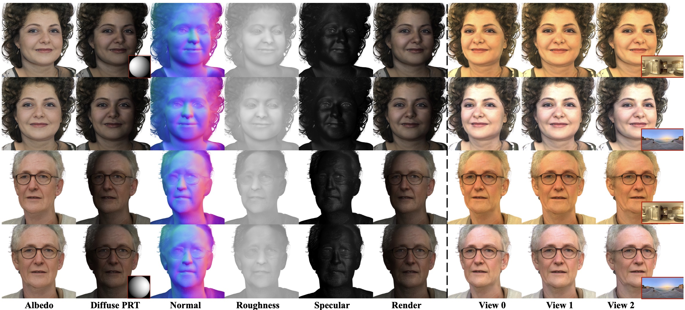

Short Bio
I am a PhD student in the Faculty of Computing at Harbin Institute of Technology, advised by Prof. Shengping Zhang. I am currently a research intern at Ant Group, where I am fortunate to work with Dr. Boyao Zhou and Dr. Ka Leong Cheng.
My research focuses on human-centric 3D vision and graphics, especially high-fidelity digital humans, relightable rendering, and learning-based 3D representations. I am also interested in 2D and 3D foundation models and world models, and am actively exploring these directions.
Selected Research
-
-
-
-

-

-

Education
- PhD, Faculty of Computing, Harbin Institute of Technology, 2022 - Now.
- MSc, Department of Computing, Imperial College London, 2020 - 2021.
- BSc, Department of Mathematical Sciences, University of Liverpool, 2018 - 2020.
- BSc, Department of Applied Mathematics, Xi'an Jiaotong-Liverpool University, 2016 - 2018.
Running
I started distance running in 2024 and keep track of selected race results here.
- 2025-03-09, Pukou Marathon, Half Marathon, 1:39:25.
- 2025-04-20, Rongcheng Marathon, Half Marathon, 1:30:32.